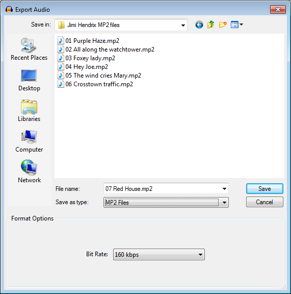

MP2 Export Options
From Audacity Development Manual
MP2 is a compressed, lossy audio format. It is mainly used in broadcasting and sometimes as the format for DVD soundtracks.
- Accessed by: then choosing MP2 Files from the Save as type dropdown menu.
- 
- Also accessed by: then choosing MP2 Files from the Save as type dropdown menu. In this case the options dialog will appear in the center of the Export Multiple dialog.
MP2 Export Setup
- Bit Rate: Choose a bit rate from 16 kbps to 384 kbps. The default of 160 kbps gives about the same quality as the default 128 kbps MP3 encoding, but a larger file. Increasing the bit rate will further increase the quality and the file size. At its highest bit rates, MP2 is usually considered to have slightly higher quality and greater error resilience than MP3, but again at the cost of a larger file size.